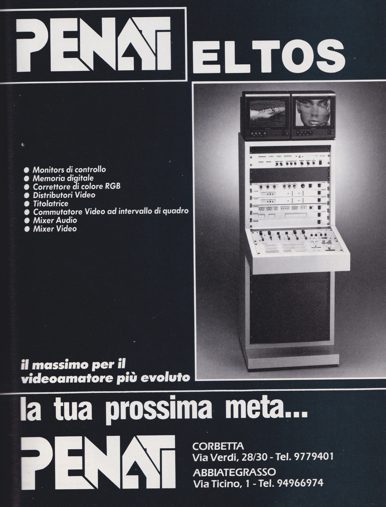

Eltos - a mysterious Italian video company
Note: this page is still unfinished
The first ever video processor I got, which was more or less the spark that got me into experimenting with analog video, was the V3000 from a weird unknown company called Eltos. I now have three devices in total from them and, importantly, have been able to find a little more information about them.
Eltos was a video equipment manufacturer from Italy; while any specific details about them seem to have been lost to time, by what I can tell they seem to have been moderately popular here in Italy in the prosumer and lower end professional market, since I've seen a few of devices from them sold on Ebay and other online shopping sites.
An overview
Eltos V2500 video effects
This device applies a simple posterise effect (similar to the "paint" effect on Panasonic video mixers) to the incoming video signal - this flattens the colours of the image and makes everything look like a drawing or a poster (hence the name).
Eltos V3000 video signal conditioning

{kind=link}
Eltos V4000 video switching unit
{kind=link}

Other products
Their products seem to fall into two categories: on one hand there's the smaller stand-alone units like the ones I have. These seem to be the ones more easily found online and thus I imagine the most popular. On the other there's their rack-mount devices - these are much harder to find any information about.
The rack-mount devices
As previously mentioned, there is very little information available about these, apart from two online listings about the VX861 video mixer and the VCC200 colour corrector. However, thanks to this ad (which seems to be from one of Eltos's resellers) I found on an A/V mag from December 1988, we can get a pretty good view of their higher-end lineup from the time.
The picture in the ad shows all of the devices made by them at the time installed in a rack-mount case, with two preview monitors on the top. While it's obviously not high-res enough to be able to read any labels from the devices themselves, the ad is accompanied by some text detailing what their product lineup was, which seems to correspond exactly with the way the way the various devices were installed, from top to bottom.
{kind=link}
Translated, the ad reads as:
- Control monitors
- Digital memory
- RGB colour corrector
- Video distributors
- Titler
- Video commutator
- Audio mixer
- Video mixer
The best for the most evolved video-amateur.
The complete list
In general, these are all the products they made that I've been able to find any information about online:
-
Stand-alone devices
- Eltos V2500 video effects unit
- Eltos V3000 video signal conditioning
- Eltos V4000 video switching unit
- Eltos V5000 audio processor and camera power supply
- Eltos VD7 audio/video distribution amplifier and noise reduction unit
- Eltos VR10 audio video rack
- Eltos VCC200 video color control
- Eltos VX861 video effects generator (=video mixer)
- Eltos MX500 audio mixer
- Eltos MX623A audio mixer
- Eltos MX700 audio mixer
Rack-mount devices
Other